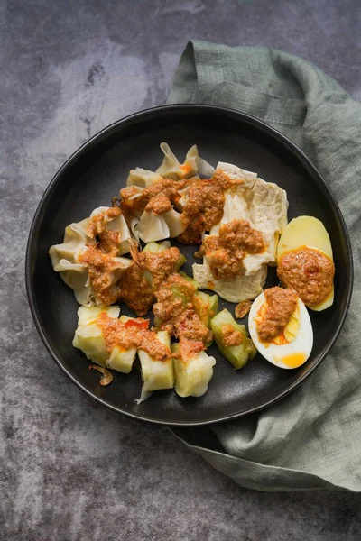

:strip_icc():format(webp)/kly-media-production/medias/2834715/original/082188900_1561183059-shutterstock_1134726890.jpg)

:strip_icc():format(jpeg)/kly-media-production/medias/4365048/original/059747100_1679296622-shutterstock_2003551073.jpg)
How to Cook The Cuisines
Master the art of cooking with these step-by-step recipes.




Es Timun Selasih
Savor Indonesia's cooling cucumber and basil seed drink, a perfect tropical refreshment.
View Recipe